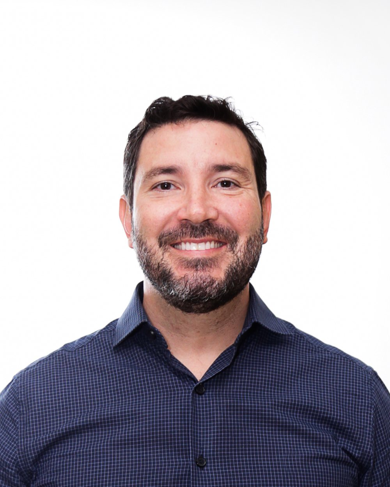
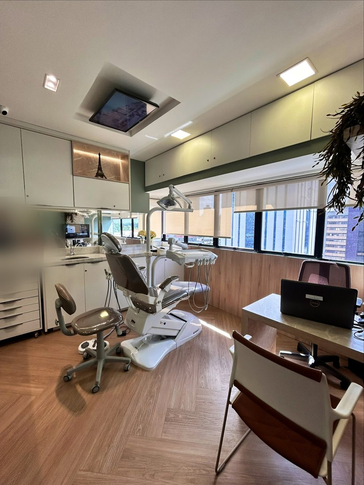
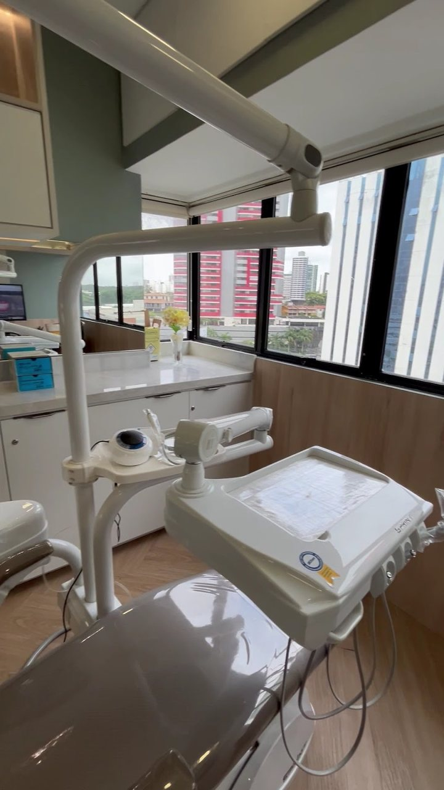
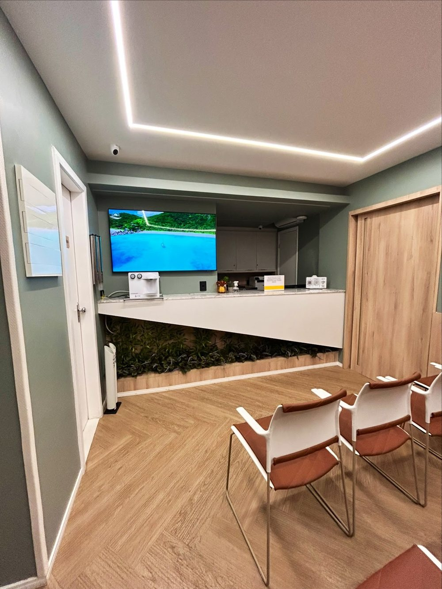

CRO-BA 9322Cirurgião-dentista · Salvador
Dr. Luciano
Dantas
Prótese e reabilitação oral, alinhadores transparentes, implantes e lentes de contato dental.
Cada tratamento começa por uma avaliação e um plano feito para você, com planejamento digital. Atendimento em Patamares, no Wall Street Empresarial.
5,0★★★★★266 avaliações no Google

Por onde começar
O que trouxe você até aqui?
As áreas que o Dr. Luciano divulga, cada uma numa página para ler com calma antes da avaliação. A informação é geral; a indicação é individual.
Perdi dentes ou tenho restaurações grandes
Coroas, pontes, próteses removíveis e sobre implante.
Prótese e reabilitaçãoOrtodontiaQuero alinhar os dentes
Alinhadores transparentes e aparelho fixo, com escaneamento digital.
AlinhadoresImplantesQuero repor um dente que falta
Como o implante é planejado e em que etapas.
ImplantesEstéticaQuero mudar forma ou cor dos dentes
Lentes de contato dental, facetas e restaurações estéticas.
Lentes e facetasNota 5,0 · 266 avaliações
Ele responde aos pacientes, na primeira pessoa.
Na ficha do Google, o Dr. Luciano tem nota 5,0 em 266 avaliações, e as avaliações que lemos têm resposta dele, na primeira pessoa. Ao lado, trechos de avaliações e, junto de cada uma, uma das respostas que ele publicou na ficha.
Trechos literais da ficha do Google, lidos em 11/10/2026. As respostas são dele, publicadas na ficha; a combinação com cada avaliação foi feita para esta prévia. Ver a ficha
“Sou paciente do Dr. Luciano há muitos anos e sempre fui muito bem atendida.”
★★★★★“Obrigado pela confiança de sempre! Conte comigo!!”
“Dr Luciano, explicou com detalhes tudo o que iria fazer.”
★★★★★“Muito obrigado pela confiança! Conte sempre comigo nessa jornada!”
“Excelente profissional, competente, dedicado, humano.”
★★★★★“Muito obrigado pela confiança! Conte comigo e com nossa equipe de sempre!”
Planejamento da reabilitação
Do primeiro encontro à entrega.
Uma prótese, uma coroa ou um conjunto de lentes passam por etapas. O número de sessões e o tempo de cada uma variam de pessoa para pessoa.
- 01Avaliação
Conversa sobre o que incomoda, exame clínico e, quando indicado, radiografias, tomografia e fotos.
- 02Planejamento
O plano é desenhado a partir dos exames e do escaneamento digital: o que fazer, em que ordem e com que materiais.
- 03Provas
Antes da peça final, provas de forma, cor, mordida e encaixe — e ajustes, quantos forem necessários.
- 04Entrega
Instalação da peça, orientação de higiene e revisões marcadas para acompanhar o tratamento.

“Na avaliação inicial, já conseguimos realizar um planejamento digital personalizado, estimar o tempo de tratamento e apresentar o investimento.”Legenda do Dr. Luciano no Instagram, 12/08/2026 · ver o perfil
Informação geral sobre como um tratamento reabilitador costuma se organizar. A indicação é individual, definida na avaliação.
Trajetória
Desde 2002, com datas e fontes.
Cada etapa traz a fonte: a Receita Federal, o CNES e o que o próprio Dr. Luciano publica.
A trajetória completa e como conferir- 2002Início na odontologia
“Sou Cirurgião-Dentista atuando desde 2002” — na descrição que ele escreveu na ficha do Google.
Fonte: ficha do Google (autodeclarado) - 2009Clínica em Cajazeiras
Sócio da LDVN Clínica Odontológica, de nome fantasia “Clínica Odontológica Cajazeiras”, aberta em 2009.
Fonte: Receita Federal (CNPJ hoje baixado) - 2018Consultório com CNPJ próprio
Abre, em janeiro de 2018, o Consultório Odontológico Dr. Luciano Dantas, como titular.
Fonte: Receita Federal - 2019–2024Hospital Naval de Salvador
Cirurgião-dentista protesista do Hospital Naval de Salvador, de julho de 2019 a maio de 2024.
Fonte: histórico de vínculos do CNES - 2026Congresso IN26
Participa do IN26, congresso de implantodontia e reabilitação oral, em setembro de 2026.
Fonte: Instagram dele

Na voz do Dr. Luciano
Atendimento humanizado, transparente e seguro.
“Minha abordagem é centrada no paciente, com planos personalizados que aliam estética, função e durabilidade. Atuo com visão multidisciplinar […]. Prezo por um atendimento humanizado, transparente e seguro.”
Descrição do Dr. Luciano na ficha do Google · ver a ficha
“Dias intensos de muito aprendizado, atualização, troca de experiências e contato com grandes profissionais da Implantodontia e da Reabilitação Oral. […] Volto para Salvador com novas ideias… […] estar sempre atualizado faz parte do meu compromisso.”Legenda do Dr. Luciano no Instagram, 26/09/2026, sobre o congresso IN26 · ver a publicação
Avaliações
5,0 no Google, em 266 avaliações.
Trechos curtos de avaliações públicas da ficha do Dr. Luciano, sobre o atendimento. Nomes abreviados.
O Dr. Luciano é um excelente profissional! Foi extremamente atencioso com a minha situação.
Sou paciente do Dr. Luciano há muitos anos e sempre fui muito bem atendida. É um dentista extremamente competente, humano, atencioso e comprometido com o bem-estar dos seus pacientes.
Durante a consulta, ele me orientou de forma clara e segura […]
Dr Luciano, explicou com detalhes tudo o que iria fazer. […] Recomendo muito esse profissional.
Excelente profissional, competente, dedicado, humano. […] Consultório organizado […]
Dentista competente, atento, que se preocupa e acompanha o paciente.
Experiência muito boa Dr. luciano Dantas Um ótimo profissional
Conteúdos
Para ler e conferir.
Publicações do Dr. Luciano no Instagram e a ficha dele no Google.
Implantodontia e reabilitação oral: o que ele trouxe de um congresso da área.
Ver a publicação ↗Instagram · 13/07/2026Protetor bucal no esportePor que o protetor bucal protege dentes e estruturas da face nos esportes de contato.
Ver a publicação ↗Instagram@dr.lucianodantasO perfil do Dr. Luciano, com mais de 4,6 mil seguidores e quase 200 publicações.
Abrir o Instagram ↗Google266 avaliações, nota 5,0A ficha do Google, com as avaliações dos pacientes e as respostas dele.
Ver a ficha ↗Onde atendo
Patamares, Wall Street Empresarial.
Na Av. Luiz Viana Filho (Paralela). Veja como chegar.

Atendimento em Patamares — Wall Street EmpresarialAv. Luiz Viana Filho, 6462 · Patamares · Salvador – BA · 41730-101
Atendimento com hora marcada — confirme pelo WhatsApp
Os horários não estão publicados nas fontes consultadas. Atendimento com hora marcada — confirme pelo WhatsApp (71) 99306-1111.
Dúvidas frequentes
Perguntas comuns
Onde o Dr. Luciano atende?
Em Patamares, no Wall Street Empresarial — Av. Luiz Viana Filho, 6462, Salvador. Veja endereço e mapa.
Como agendar?
Pelo WhatsApp (71) 99306-1111. É o número que o Dr. Luciano publica para agendamentos; dia e horário são combinados na conversa.
Qual é o horário?
O atendimento é com hora marcada. Confirme os horários disponíveis pelo WhatsApp.
Em que áreas o Dr. Luciano atua?
Ele é cirurgião-dentista inscrito no CRO-BA (CRO-BA 9322), com atuação em prótese e reabilitação oral, alinhadores e ortodontia, implantes e lentes de contato dental. Foi cirurgião-dentista protesista do Hospital Naval de Salvador de 2019 a 2024. Veja a trajetória com as fontes.
A primeira consulta já define o tratamento?
A avaliação serve para examinar, pedir os exames necessários e explicar as opções, com etapas e cuidados de cada uma. A indicação é individual, definida na avaliação.
Aceita convênio? Quanto custa?
Confirme pelo WhatsApp as condições de atendimento. O valor de cada tratamento é apresentado depois da avaliação.
Agende
Comece pela avaliação.
Atendimento com hora marcada em Patamares, no Wall Street Empresarial. Fale direto com o Dr. Luciano pelo WhatsApp (71) 99306-1111.